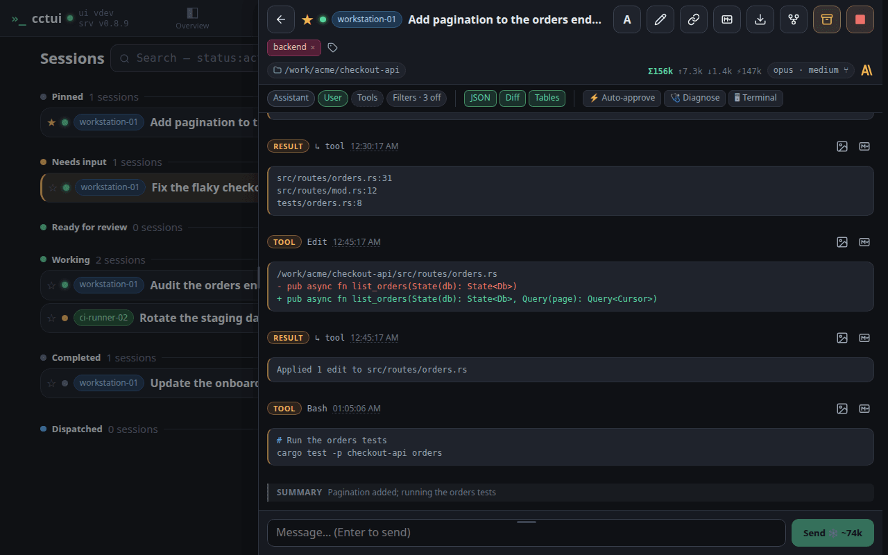
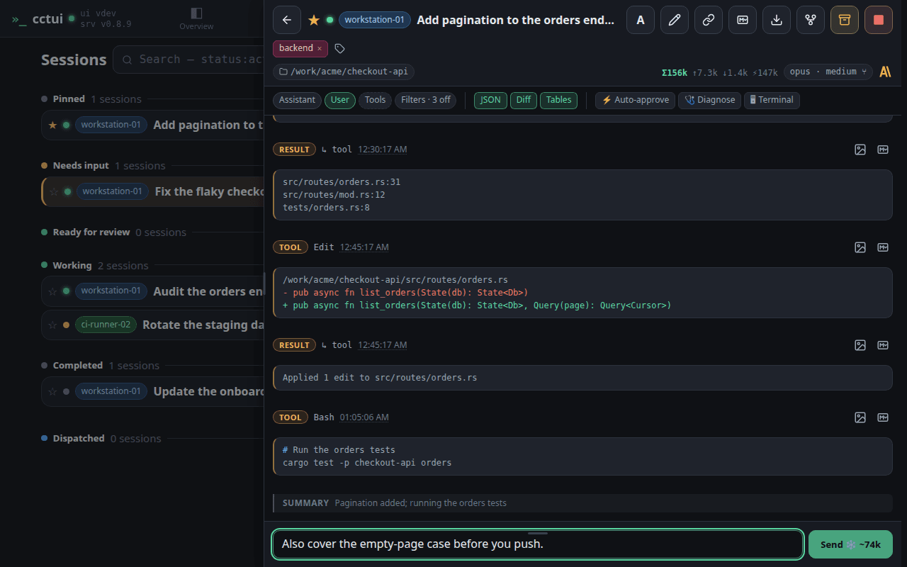
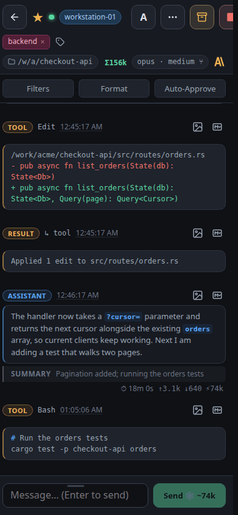
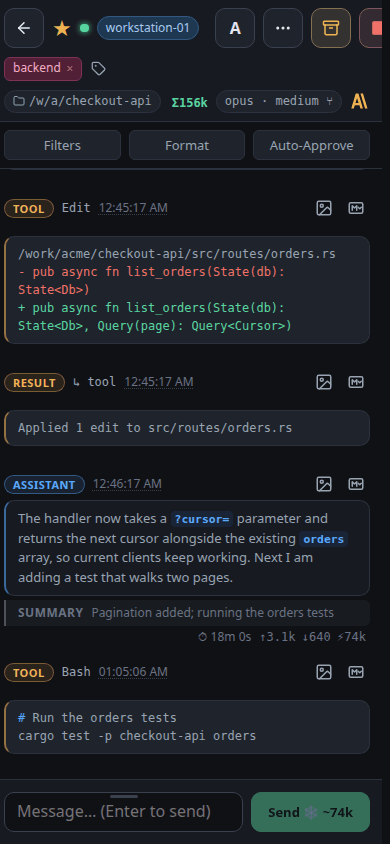
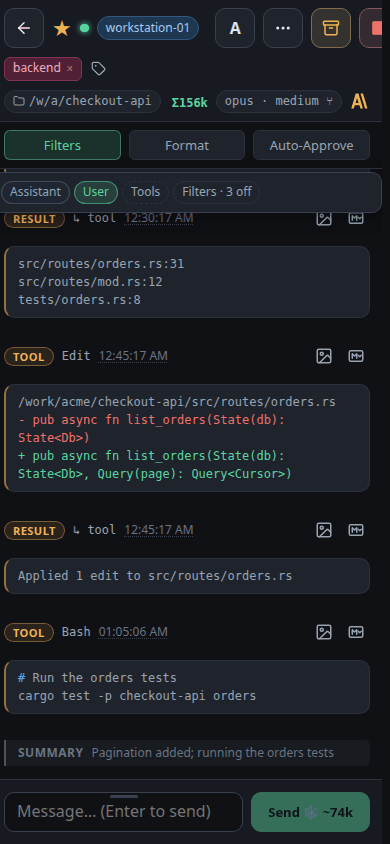
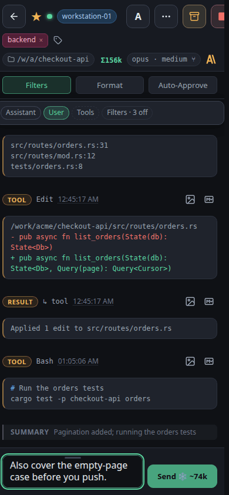

Open a session Selecting a session opens its conversation beside the list, so the rest of the fleet stays in view.Read the whole transcript Every prompt, reply, tool call and tool result is kept, so you can see exactly what the agent did.

Filter the noise Hiding the assistant messages leaves the tool calls — the fastest way to audit what an agent touched.

Steer it mid-run A reply goes to the running agent, so you can redirect the work without restarting it.
viewport=mobile theme=dark

Open a session A session has its own address, so the conversation opens straight from a link.

Read the whole transcript Every prompt, reply, tool call and tool result is kept, so you can see exactly what the agent did.

Filter the noise Hiding the assistant messages leaves the tool calls — the fastest way to audit what an agent touched.

Steer it mid-run A reply goes to the running agent, so you can redirect the work without restarting it.